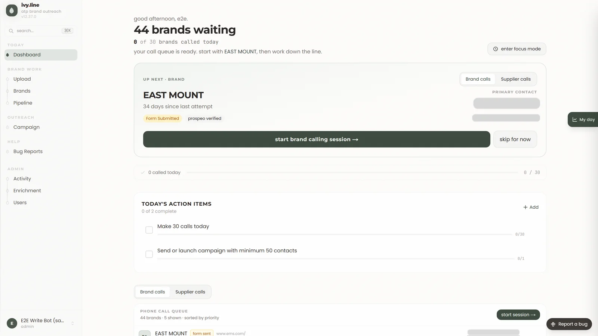

01 AbuvThePar · $50M+ Amazon operator
Ivy: 2.6× outreach, same team
- outreach / week
- 400 → 1,050
- calls / week
- 30 → 250
- purchase orders / week
- 6 → 25–35
- no headcount added
- Same team
Read the build
The team was running outreach, purchasing and invoicing out of spreadsheets and manual dialing. We built Ivy, one platform that runs the call queue, PO intake and review, the offers inbox and invoice creation (Xero).